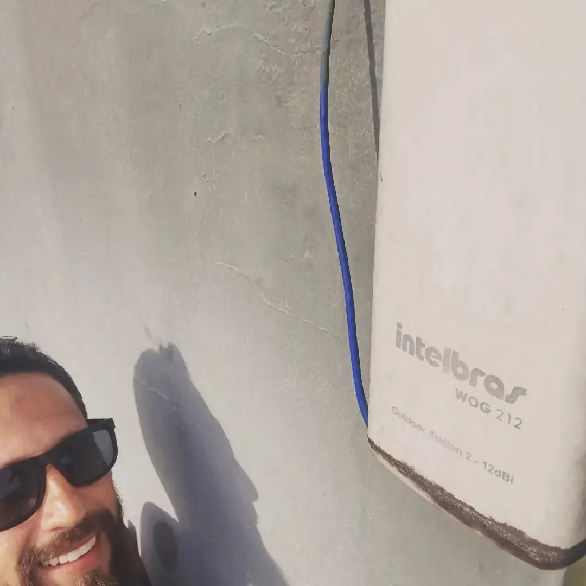

Consultoria de infraestrutura e cloud
Infraestrutura em ordem, sem derrubar o que já funciona
Ajudo pequenas e médias empresas a colocar servidores, deploy e cloud em ordem. Eu diagnostico, implemento, documento e ensino sua equipe a operar. Começo pelo problema mais urgente e só mexo na produção depois de validar.
Marcar conversa gratuita Ver serviçosAlgum desses soa familiar?
- “Nosso site está lento ou cai e ninguém sabe por quê.”
- “Temos um servidor Linux, mas ninguém sabe como ele está configurado.”
- “O deploy é manual, feito por uma pessoa só, e dá medo mexer.”
- “Nunca testamos se o backup realmente volta.”
- “Queremos usar containers, Kubernetes ou IA, mas não sabemos por onde começar.”
Por onde começar
Diagnóstico de Infraestrutura
Descubra os riscos antes que virem prejuízo. Você entende a situação do seu ambiente antes de investir em qualquer projeto.
- Até 3 servidores ou ambientes: sistema, atualizações, acessos, portas, firewall e logs
- Revisão de backup: o que é copiado, onde fica e quando foi testado
- Domínio, HTTPS e e-mail (SPF, DKIM e DMARC)
- Relatório sem tecniquês, com os riscos em ordem de prioridade e um plano por etapas
- Reunião de 45 minutos para apresentar o resultado
Investimento
R$ 890Abatido do projeto se você fechar em até 30 dias.
Entrega em 5 dias úteis após receber os acessos.
Quero o diagnósticoServiços, do primeiro passo ao Cloud Native
Você não precisa começar pelo Kubernetes. Cada degrau resolve um problema real e prepara o próximo.
Degrau 1
Presença Web
Seu site no ar, com domínio, HTTPS e e-mail profissional.
- Site institucional ou landing page
- Domínio, DNS e HTTPS
- E-mail com SPF, DKIM e DMARC
Degrau 2
Servidor em Ordem
Linux seguro, com backup testado e tudo documentado.
- Diagnóstico e atualização
- Nginx, usuários, SSH e firewall
- Backups com teste de restauração
Degrau 3
Deploy Automático
Do git push para produção, sem passo manual.
- Git e GitHub organizados
- CI/CD com GitHub Actions
- Scripts e rollback
Degrau 4
Containers
Sua aplicação empacotada, rodando igual em qualquer lugar.
- Docker e Docker Compose
- Ambientes reproduzíveis
- Infraestrutura como código (Terraform, Ansible)
Degrau 5
Kubernetes sem Susto
Piloto em ambiente paralelo, para você ver funcionando antes de decidir.
- Cluster paralelo, sem tocar na produção
- GitOps com Argo CD
- Prometheus e Grafana
Em qualquer degrau
Novo · Monitoramento
Observabilidade e Monitoramento
Tudo o que sua empresa tem no ar, em um só painel, com alerta antes do cliente perceber.
- Sites, e-mail, certificados, servidores e rede
- Zabbix, Prometheus e Grafana
- Alertas no Telegram, WhatsApp ou e-mail
Novo · IA
Assistente de IA Local
Um assistente que conhece sua empresa, e os dados não saem dela.
- Responde com base nos seus documentos
- Texto ou voz, rodando na sua rede
- Mais fácil cumprir a LGPD, sem mensalidade de IA
Sob medida
IA Aplicada
IA trabalhando com os seus dados, sem expor os seus dados.
- LLMs locais ou em nuvem
- Automações e agentes
- Análise de logs e documentos
Suporte mensal
Depois da entrega, acompanho o ambiente com monitoramento, atualizações, revisão de alertas e custos, e um banco de horas para dúvidas, enquanto sua equipe ganha autonomia.
Como funciona
- Conversa inicial (30 min, sem custo)Você conta o cenário e o que quer resolver.
- DiagnósticoMapeio o ambiente e entrego os riscos em ordem de prioridade, com um plano por etapas.
- Proposta com escopo fechadoVocê sabe o que será entregue, quando e quanto custa antes de começar.
- Execução com segurançaBackup antes de qualquer mudança e validação em ambiente paralelo quando for preciso.
- Documentação e repasseTudo documentado, com uma sessão de treinamento para quem vai operar.
Cases reais
Problemas reais, resolvidos e documentados: o que estava acontecendo, o diagnóstico, o que foi feito e o que mudou.

Redes e Wi-Fi · 2024
Wi-Fi em todos os quartos de uma pousada
Da repetição de sinal pelo ar para uma rede estruturada, com cabo, switch PoE e pontos de acesso Intelbras AP 360.
Ler o caseCompromissos
Produção é sagrada
Nada vai para o ar sem backup e sem validação.
Documentar sempre
Se não está documentado, não foi entregue.
Sem dependência
O objetivo é sua equipe precisar cada vez menos de mim.
Quem está por trás
Eu sou o Tácio Souza, Cloud Engineer com base em Linux, Kubernetes, Terraform e automação. Tenho a certificação LFCS e estou na trilha de certificações da Linux Foundation e da CNCF. Aplico em um laboratório próprio, documentado em público, as mesmas práticas que proponho aos clientes. Este site é o primeiro case: domínio próprio, HTTPS e publicação automatizada pelo GitHub.
Vamos conversar sobre o seu ambiente?
Mande um resumo do que você roda hoje e o que quer melhorar. Respondo com os próximos passos.
Falar no WhatsApp contato@kurumintecnologia.com.br